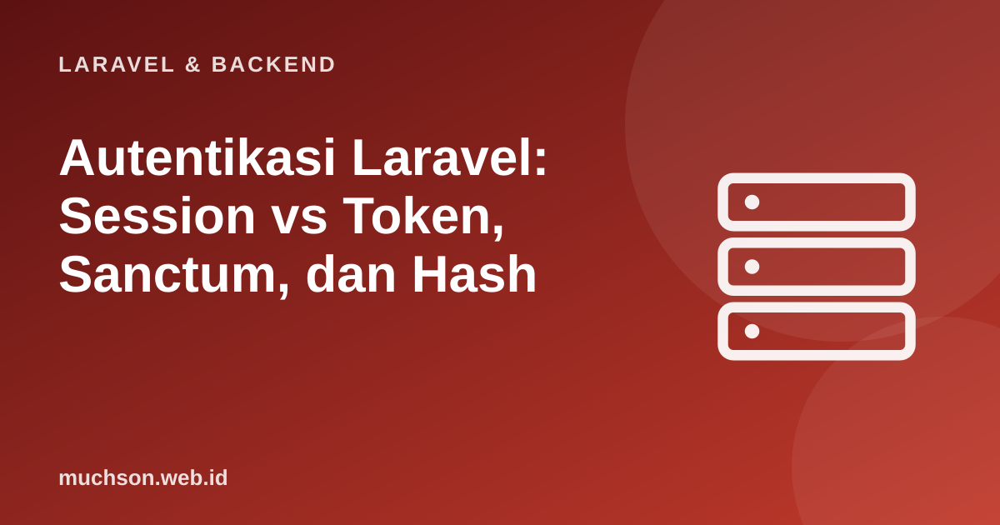

Beranda › Artikel › Laravel & Backend
Laravel & BackendAutentikasi Laravel: Session vs Token, Sanctum, dan Hash
Autentikasi menjawab "siapa Anda?" dan otorisasi menjawab "apa yang boleh Anda lakukan?". Di Laravel keduanya sudah tersedia dengan baik, tetapi Anda tetap perlu memahami pilihan di baliknya: sesi atau token, bagaimana kata sandi disimpan, dan apa yang terjadi saat seseorang login. Kesalahan di sini adalah kesalahan paling mahal.
Sebaiknya sudah paham: dasar Laravel, REST API, validasi

Setelah membaca dan mencoba materi ini, Anda mampu:
- membedakan autentikasi dan otorisasi
- membedakan autentikasi berbasis sesi dan token serta kapan memakainya
- memakai Sanctum untuk SPA dan API token
- memahami hashing kata sandi dan mengapa bcrypt/Argon2 dipakai
- menerapkan praktik aman: pembatasan percobaan, MFA, dan penyimpanan token
Kode PHP/Laravel di artikel ini ditampilkan sebagai contoh yang mengikuti dokumentasi Laravel (versi 11 dan seterusnya, PHP 8.2 atau lebih baru). Bagian "cara kerja di balik layar" dijalankan sungguhan dengan Python atau JavaScript agar konsepnya dapat dibuktikan.
Sesi atau token
| Sesi (cookie) | Token (Bearer) | |
|---|---|---|
| Cara kerja | Server menyimpan sesi; browser menyimpan cookie berisi ID sesi | Klien menyimpan token dan mengirimnya di header Authorization |
| Cocok untuk | Aplikasi web biasa (Blade) dan SPA di domain yang sama | Aplikasi seluler, layanan lain, klien pihak ketiga |
| Pencabutan | Hapus sesi di server | Hapus token di server (bila disimpan) atau tunggu kedaluwarsa |
| Ancaman utama | CSRF (dicegah token CSRF dan SameSite) | Token bocor; XSS bila disimpan di tempat yang dapat dibaca JavaScript |
| Di Laravel | Guard web (bawaan) | Sanctum token atau Passport (OAuth2) |
Hash kata sandi: aturan yang tidak boleh dilanggar
Kata sandi tidak boleh disimpan sebagai teks biasa, dienkripsi (yang dapat dibalik), atau di-hash dengan MD5/SHA-1/SHA-256 polos. Gunakan fungsi hash kata sandi yang lambat dan bergaram: bcrypt atau Argon2. Laravel melakukannya lewat Hash::make() dan Hash::check().
<?php
use Illuminate\Support\Facades\Hash;
$hash = Hash::make('rahasia-saya'); // bcrypt bawaan; garam acak otomatis tertanam di hasil
// $2y$12$kQ... (algoritma, biaya, garam, hash)
Hash::check('rahasia-saya', $hash); // true
Hash::check('salah', $hash); // false
Hash::needsRehash($hash); // true bila biaya/algoritma di konfigurasi sudah dinaikkan
// config/hashing.php atau .env: BCRYPT_ROUNDS=12 ; atau driver 'argon2id'
// Model User sudah memakai cast 'password' => 'hashed' sehingga nilai otomatis di-hash saat diisi.import hashlib, hmac, os, time
# Mengapa hash harus LAMBAT: penyerang yang memiliki basis data bocor mencoba tebakan massal.
def hash_cepat(sandi): # buruk: SHA-256 polos
return hashlib.sha256(sandi.encode()).hexdigest()
def hash_lambat(sandi, garam, putaran=200_000): # baik: PBKDF2 (konsep sama dengan bcrypt/Argon2)
return hashlib.pbkdf2_hmac("sha256", sandi.encode(), garam, putaran).hex()
garam = os.urandom(16)
t0 = time.perf_counter()
for i in range(20_000): hash_cepat("tebakan" + str(i))
cepat = (time.perf_counter() - t0) / 20_000
t0 = time.perf_counter()
for i in range(5): hash_lambat("tebakan" + str(i), garam)
lambat = (time.perf_counter() - t0) / 5
print(f"SHA-256 polos : {cepat * 1e6:8.2f} mikrodetik per tebakan -> {1 / cepat:>12,.0f} tebakan/detik per inti")
print(f"PBKDF2 lambat : {lambat * 1e6:8.0f} mikrodetik per tebakan -> {1 / lambat:>12,.0f} tebakan/detik per inti")
print(f"penyerang {lambat / cepat:,.0f}x lebih lambat dengan hash yang tepat")
# garam membuat sandi yang sama menghasilkan hash berbeda
print(hash_lambat("password1", os.urandom(16), 1000) == hash_lambat("password1", os.urandom(16), 1000))SHA-256 polos : 0.81 mikrodetik per tebakan -> 1,232,582 tebakan/detik per inti
PBKDF2 lambat : 74919 mikrodetik per tebakan -> 13 tebakan/detik per inti
penyerang 92,343x lebih lambat dengan hash yang tepat
False
Memulai cepat: starter kit
# Laravel 12: pilih starter kit saat laravel new (React, Vue, atau Livewire) untuk login, daftar, reset kata sandi
laravel new toko
# Laravel 11 / proyek yang sudah ada: Breeze
composer require laravel/breeze --dev
php artisan breeze:install
php artisan migrateSanctum untuk API
<?php
// php artisan install:api (memasang Sanctum). Model User memakai trait HasApiTokens.
use Illuminate\Http\Request;
use Illuminate\Support\Facades\Hash;
// POST /api/login -> menerbitkan token
Route::post('/login', function (Request $request) {
$data = $request->validate(['surel' => 'required|email', 'sandi' => 'required']);
$user = User::where('email', $data['surel'])->first();
if (! $user || ! Hash::check($data['sandi'], $user->password)) {
return response()->json(['pesan' => 'Surel atau kata sandi salah.'], 422); // pesan sama untuk dua kasus
}
$token = $user->createToken('aplikasi-seluler', ['produk:baca'])->plainTextToken;
return ['token' => $token]; // tampilkan SEKALI; di basis data hanya hash-nya yang tersimpan
})->middleware('throttle:5,1'); // maksimal 5 percobaan per menit
// Rute terlindungi
Route::middleware('auth:sanctum')->group(function () {
Route::get('/saya', fn (Request $r) => $r->user());
Route::post('/logout', function (Request $r) {
$r->user()->currentAccessToken()->delete(); // cabut token ini
return response()->noContent();
});
});
// klien: Authorization: Bearer 12|abcdef...SPA di domain yang sama
Untuk SPA React/Vue yang satu domain induk dengan API, Sanctum menyediakan autentikasi sesi berbasis cookie (tanpa token yang disimpan di JavaScript): panggil /sanctum/csrf-cookie, lalu kirim kredensial ke endpoint login. Pendekatan ini lebih aman terhadap pencurian token lewat XSS.
Praktik yang aman
1. Mengapa kata sandi dienkripsi bukan pilihan yang baik dibanding di-hash?
2. Apa itu session fixation dan bagaimana mencegahnya?
3. Kapan memilih Sanctum token dibanding sesi untuk SPA?
4. Apa fungsi abilities pada token?
- Autentikasi: siapa Anda; otorisasi: apa yang boleh Anda lakukan.
- Sesi cocok untuk web dan SPA satu domain; token (Sanctum) untuk seluler dan klien lain.
- Hash kata sandi dengan bcrypt/Argon2 (lambat dan bergaram); jangan SHA polos atau enkripsi.
- Gunakan starter kit, batasi laju login, regenerasi sesi, cookie aman, token berkemampuan terbatas, dan 2FA.